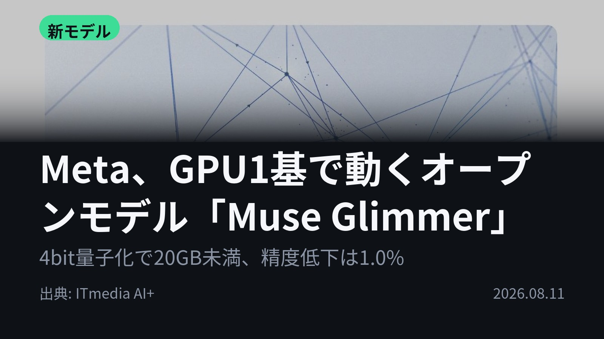
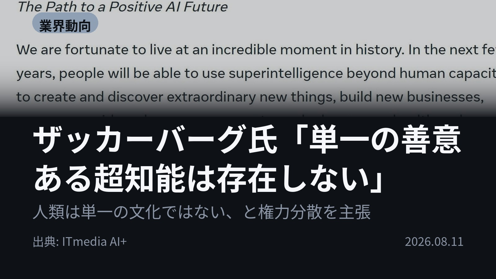
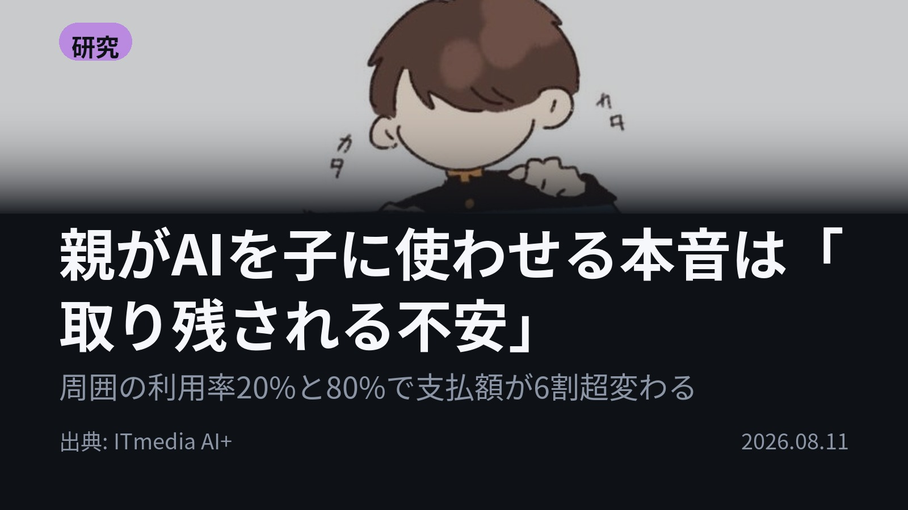
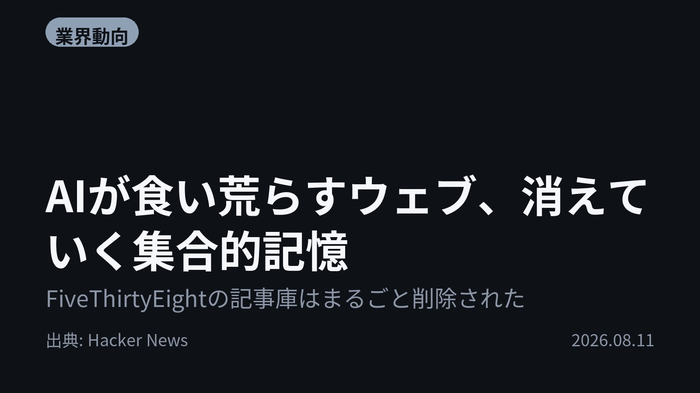
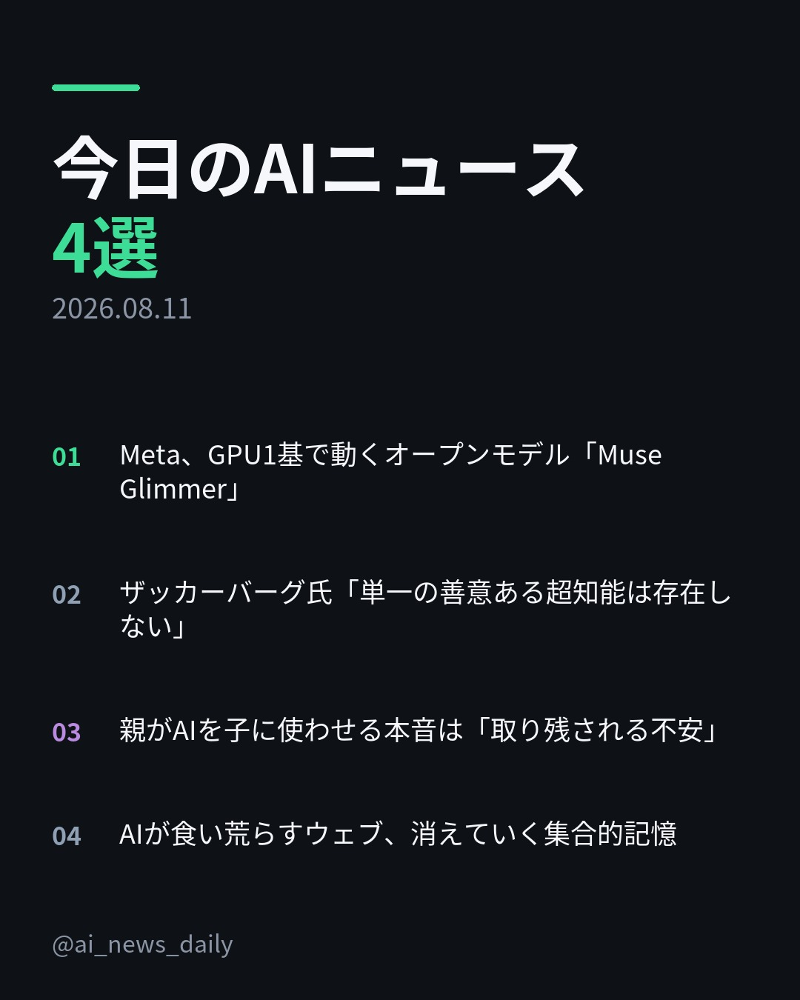
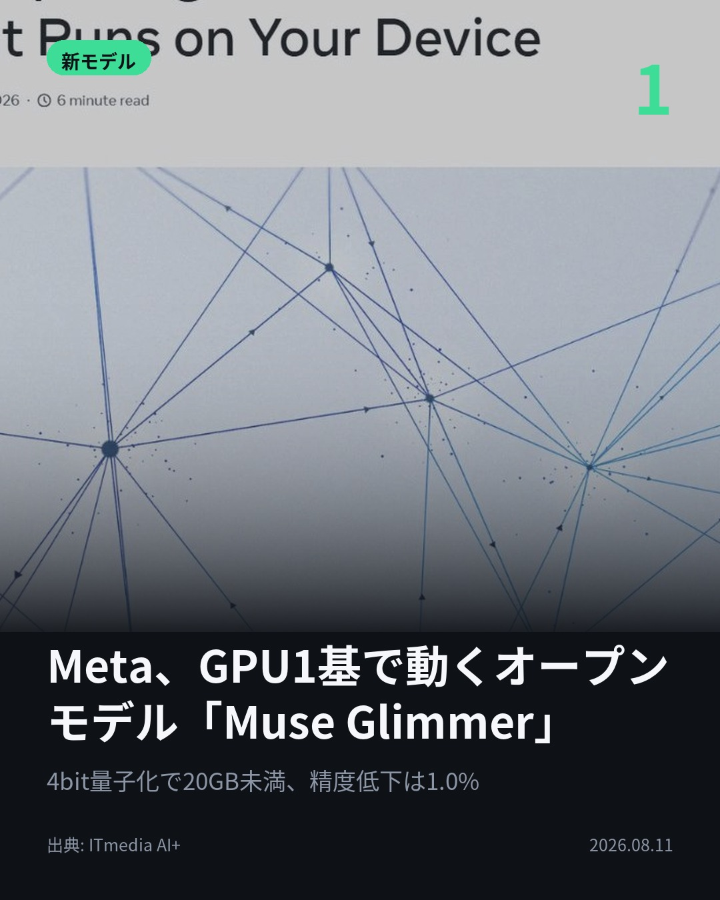
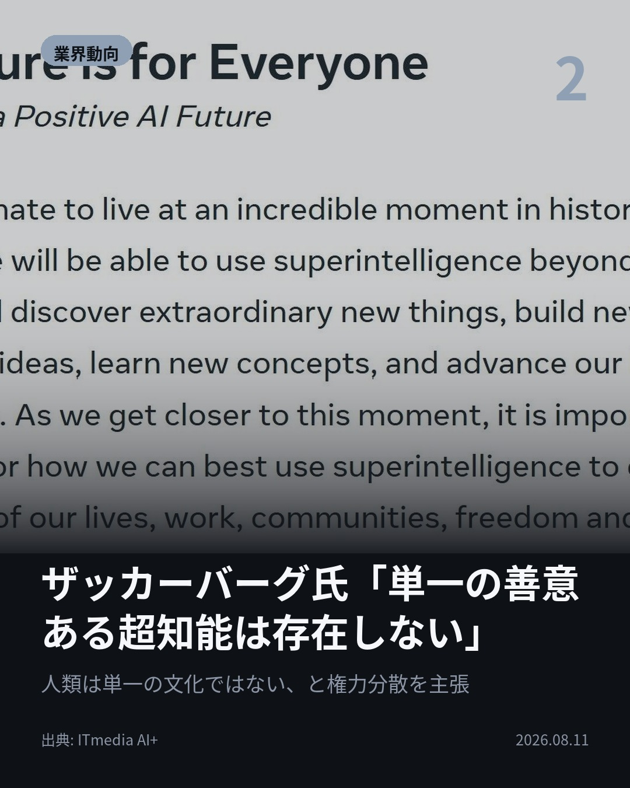
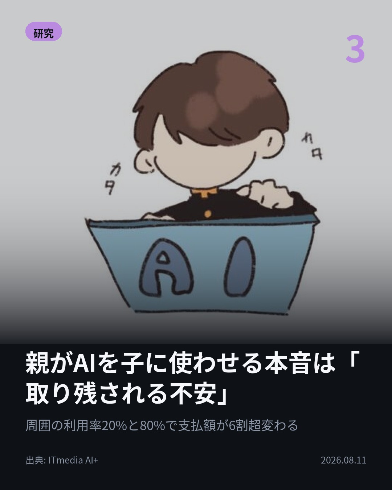
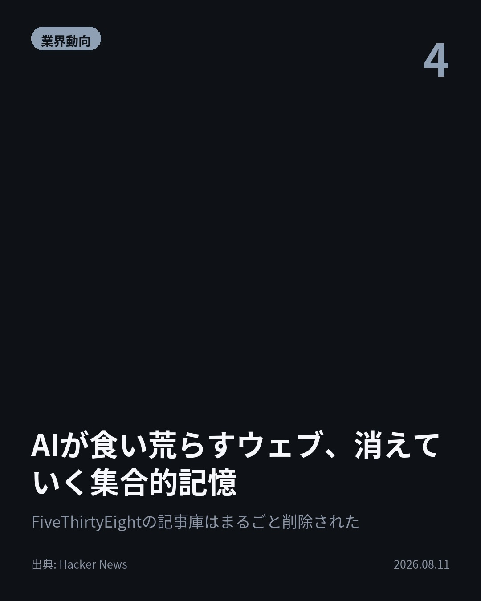

今日のAIニュース 下書き
2026-08-11 生成 08/11 20:38
⚠ ファクト照合で要確認の項目があります。
各ニュースの警告を確認してから投稿してください。
X（4投稿）
Meta、GPU1基で動くオープンモデル「Muse Glimmer」
原題: Meta、ローカル動作に特化したオープンモデル「Muse Glimmer」公開 Apache 2.0で提供

55GB超のモデルが4bit量子化で20GB未満に。 MetaのオープンモデルMuse GlimmerはGPU1基で動き、24GB構成でも精度低下は1.0%。Apache 2.0。 手元のPCで動くエージェントが現実に。 #AI #Meta（出典: ITmedia AI+）
重み 197 / 280（見た目 134字）
{kind=link}
ザッカーバーグ氏「単一の善意ある超知能は存在しない」
原題: ザッカーバーグCEO、超知能の集中化に警鐘 「単一の善意ある超知能は存在しない」とオープンモデル公開再開へ

「単一の善意ある超知能というものは存在しない」 ザッカーバーグ氏は、人類は単一の文化ではない以上、超知能は一部の価値観を優先せざるを得ないと指摘。 安全性は技術でなく権力の均衡の問題だとし、オープンモデル公開の再開を表明。 #AI #超知能（出典: ITmedia AI+）
重み 253 / 280（見た目 134字）
{kind=link}
親がAIを子に使わせる本音は「取り残される不安」
原題: 親が子にAIを使わせる理由は「勉強に役立つ」ではなく「うちの子だけは遅れさせたくない」？ 2000人を調査

全面禁止に賛成なのに、なぜ我が子には使わせるのか。 親約2000人の実験。周囲の10代の利用率が20%か80%かで、AI有料プランへの支払意思額が6割超変わった。 危険性を伝えても額は減らず、最多の理由は「取り残されるから」。 #AI #教育（出典: ITmedia AI+）
重み 240 / 280（見た目 135字）
{kind=link}
AIが食い荒らすウェブ、消えていく集合的記憶
原題: As AI eats the web, the internet’s collective memory is disappearing

禁書にされた本は見つかる。消されたページは見つからない。 GoogleのAI要約は日の入り時刻すら誤る。FiveThirtyEightの記事庫はほぼまるごと削除された。 「真実はネットのどこかにある」という前提が崩れる。 #AI #アーカイブ（出典: Hacker News）
重み 232 / 280（見た目 135字）
要確認:
［固有名詞］アーカイブ — この語が本文に見つかりません
［固有名詞］Hacker — この語が本文に見つかりません
{kind=link}
Instagram（カルーセル 6枚）
{kind=link}

1. 表紙
{kind=link}

2. ニュース
{kind=link}

3. ニュース
{kind=link}

4. ニュース
{kind=link}

5. ニュース

6. CTA
完全精度なら55GB超を要したモデルが、4bit量子化で20GB未満に。 手元のPCで動くAIが現実になった日に、ネット上の記録は消え続けています。 1. Metaが約296億パラメータのオープンモデル「Muse Glimmer」をApache 2.0で公開。上位モデル「Muse Spark」からの蒸留で、入力はテキストと画像、文脈長は13万トークン超です。 数学のAIME 2026では94.7でGemma4-31BやQwen3.6-27Bを上回った一方、プロンプトインジェクションの攻撃成功率は28.4%とGemma4-31Bの25.6%に劣りました（いずれもMeta測定値）。(ITmedia AI+) 2. ザッカーバーグ氏の論考「The Future is for Everyone」。個人のエンパワーメント、発明、権力の均衡の3点を柱に、超知能を一部の機関に集中させるべきではないと主張しています。 提言は具体的で、学習途中のチェックポイントを政府に提供して重要インフラの防御に使わせる案や、モデル公開の安全基準の審査を社外の独立した取締役会に委ねる仕組みまで踏み込みました。(ITmedia AI+) 3. シカゴ大学などがPNASで発表。米国・カナダ・英国の13〜18歳の子を持つ親、計約2000人が対象で、子ども用の制限なし生成AI有料プラン（3カ月で60ドル相当）にいくら払うかを測っています。 周囲の利用率を20%と80%で示すと支払額は6割超も変化。さらに、答えを直接出す数学アプリは学校での禁止賛成が56%、考えさせる学習支援型は39%と、設計次第で親の受け止めが変わりました。(ITmedia AI+) 4. リンク切れ、アーカイブの削除、そしてAI要約が原典への導線を断つこと。米議会図書館のサイトから合衆国憲法の一部が一時消えた例も挙がっています。 404 Mediaによれば、AI検索の回答に влия…影響を与えるためRedditに記事を仕込む企業も出てきました。禁書と違い、消されたページは存在したことすら気づかれません。(Hacker News) モデルを開いていくMetaと、記録が閉じていくウェブ。同じ日に、AIの広がり方の両面が出ました。 毎朝4本、その日のAIニュースを日本語でまとめています。あとで読み返せるように保存＆フォローをどうぞ。 #AI #生成AI #人工知能 #AIニュース #テクノロジー #LLM #ローカルLLM #オープンソース #opensource #Meta #MuseGlimmer #ザッカーバーグ #AIエージェント #AI活用 #AI教育 #子育て #ウェブアーカイブ #リンク切れ #generativeai #artificialintelligence #technews #machinelearning
1205字（Instagram上限 2,200字）
この日の選定理由
Meta、GPU1基で動くオープンモデル「Muse Glimmer」
Llama 4以来のオープンウェイト公開で、手元のMacやPCで常時稼働するエージェントが現実味を帯びる。一方でプロンプトインジェクション耐性は競合に劣る。
ザッカーバーグ氏「単一の善意ある超知能は存在しない」
AIの安全性を技術問題ではなく権力の均衡の問題と定義し直した。学習途中のチェックポイントを政府へ提供する案など、具体的な政策提言まで踏み込んでいる。
親がAIを子に使わせる本音は「取り残される不安」
危険性を知らされても支払意思はほとんど下がらず、全面禁止に賛成しながら自分の子には使わせる囚人のジレンマが働く。約2000人の実験で示された数字は、教育現場のAI議論の前提を変えうる。
AIが食い荒らすウェブ、消えていく集合的記憶
AI要約が原典への導線を断ち、リンク切れやアーカイブ削除が進む。「真実はネットのどこかにある」という前提そのものが崩れつつあることを示す。